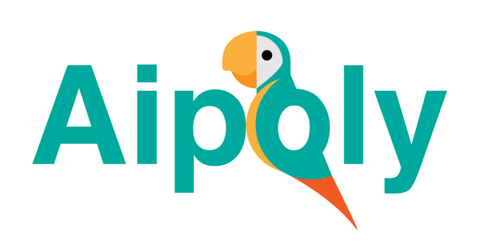

Aipoly Vision es una aplicación para reconocer objetos y colores, ayuda a personas ciegas o con diversidad funcional visual a entender su entorno. Simplemente dirigiendo el teléfono hacia el objeto de interés y presionando cualquiera de los botones de reconocimiento en la parte inferior de la pantalla para activar la inteligencia artificial.
Aipoly Vision puede reconocer gratuitamente 1.000 artículos esenciales, y muchos más a través de una suscripción.
Sus principales características son:
- Reconoce todo: Reconocer una gran variedad de objetos a una velocidad de tres veces por segundo.
- Reconocer plantas y animales: Identificar más de 2000 especies de plantas y animales, incluyendo razas de perros y especies de aves. Esta acracterística está disponible mediante suscripción.
- Lectura de texto: Leer texto en varios idiomas. Una vez que encuentre un letrero o un documento, puede cambiar al botón "leer texto" para leerlo en voz alta.
- Reconocer monedas: Aipoly Vision puede identificar monedas en dólares estadounidenses.
- Reconocer alimentos: Reconoce más de 1000 platos y alimentos.
- Reconocer colores: Aipoly puede decir más de 1400 colores distintos.
- VoiceOver: Se tiene acceso al texto encima de los botones.
- Sin conexión a Internet: Todos los modos de reconocimiento, con la excepción del texto y los productos empaquetados, funcionan sin conexión a Internet.
- Múltiples idiomas: Disponible en inglés, italiano, español, francés, alemán, japonés y árabe, dependiendo de la configuración de idioma del teléfono.
- Linterna inteligente: Detecta la oscuridad a través de la cámara y automáticamente enciende la linterna para iluminar los objetos [1].
A continuación se muestra un videotutorial de la herramienta:
Videotutorial Aipoly Vision